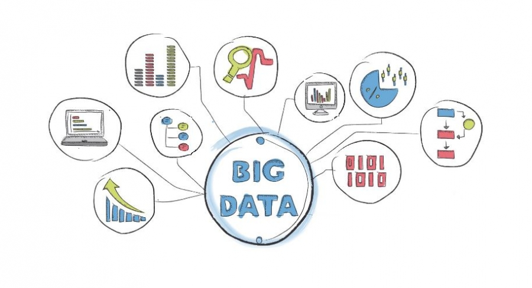

son el conjunto de tecnologías que han sido creadas para recopilar, analizar y gestionar los datos que generan los usuarios de Internet. Su idea es la de recopilar los datos masivos que son generados en "bruto", y procesarlos para identificar patrones
Los usos que se le pueden dar al Big Data son prácticamente infinitos. A rasgos generales, sirve para que una empresa o sector conozca los comportamientos generales de sus usuarios
Ofertas y descuentos,Seguridad.
¿Qué es practica?
